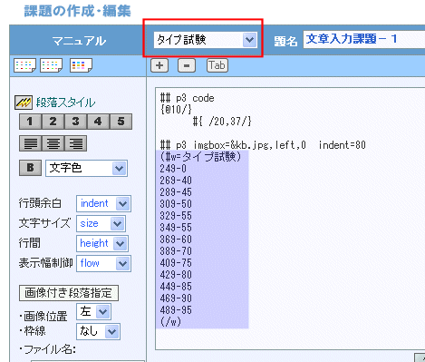

|
なお ##p3 code という段落指定の、p3は段落書式で、標準では indent=40 size=12px flow=640 height=130 と同義です。ここで、indentは左端余白、sizeは文字の大きさ、flowは１行の幅、heightは行間(%指定)です。また、code は半角空白もそのまま表示し１行は改行文字が現れるまでとする(不定にする)という意味です。プログラムを表示する時などに使いますが、ここでは下の#{ /20, /37/}の位置をそのまま有効にするために使われています。
#{ /20, /37/}と#{@10/}はEPML文です。前者は20行×37文字の入力エリアを表示する指定です。37文字を指定していますが、フォントの関係からこれで３５文字分になります。また、{@10/}は制限時間の指定で、１０分を指定しています。この値を任意に変更することで、制限時間を変えることができます。

|
|